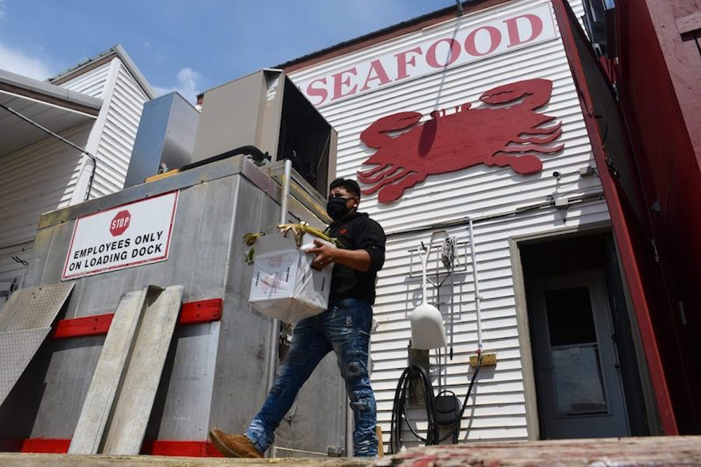

by Capital News Service Reporters, UMD
FISHING CREEK, Maryland — For thousands of miles and over two days in April, 59 workers from Mexico traveled together on a bus — despite the pandemic — to their legal, seasonal jobs as crabmeat pickers and seafood processors in Maryland’s rural islands.
Lindy’s Seafood, the wholesale crab and oyster company in Maryland that hired the workers, paid for their cross-country trip. The company put them to work the day after they arrived without quarantining or waiting for COVID-19 test results. Those safeguards are not required under state or federal law..
“Within a week, workers were informed that several people had tested positive for the disease.
Migrant seafood-processing workers, who are legally hired and transported to the U.S. each season through the federal H-2B visa program, face heightened risks of catching COVID-19.They often travel long distances to their jobs, where they live in communal housing. Classified as essential workers, they are permitted to continue working even if they come in contact with someone who has COVID-19.
“he U.S. Department of Labor, which runs the H-2B program, did not establish COVID-safety rules for the workers’ cross-country bus travel. Maryland, Virginia and North Carolina — states with flourishing seafood industries that rely on H-2B seafood workers — also failed to provide H-2B workers with critical protections in the ongoing coronavirus pandemic.
Between October 2019 and September 2020, more than 12,000 H-2B workers were authorized to work at seafood companies across the U.S., including 2,232 at 41 companies across these states, according to an analysis by the Howard Center for Investigative Journalism at the University of Maryland.
Average annual temperatures in Baltimore have gone up more than 3 degrees over the last century, nearly twice as much as the rest of the country.
The Howard Center found COVID-19 outbreaks at seafood plants in all three states through interviews with migrant workers, advocacy groups and a church. Additionally, COVID-19 safety issues in the plants rarely show up in complaints to federal and state agencies in charge of enforcing workplace protections.
Since January 2020, the Occupational Safety and Health Administration received 63,455 workplace complaints related to COVID-19 across the U.S. Of those complaints, 32 were against seafood-processing companies, which have more H-2B workers than any other industry except landscaping, a Howard Center analysis found.
“If they complain, they could be fired in retaliation and lose their lawful status in the U.S.,” said Clermont Ripley, an attorney for the nonprofit North Carolina Justice Center. “It’s this very captive workforce who are going to put up with a good bit of violations of their rights in order to be able to continue working lawfully.”
Most “really do care and really want to keep everybody safe,” said Lydia Hock, whose agency, Labormex LLC, has recruited H-2B workers for the seafood industry.
“If a worker doesn’t feel safe, they obviously don’t have to come,” she added. “There’s millions of people in Mexico that want these opportunities.”
Each season, H-2B workers travel from their hometowns in Mexico to one of seven Mexican cities, where a U.S. consulate processes and approves their visas. Then, transportation companies drive workers to different U.S. states.
Workers risk contracting COVID-19 at each stage of this process.
They may wait days, if not weeks, for their visas to process. Away from home, they often crowd into shared hotel rooms, which can be risky during the pandemic.
After getting their visas approved, workers head to the United States. H-2B employers are required to pay for transportation under federal law, and may use an H-2B recruiter to coordinate the trips.
H-2B seafood workers told the Howard Center about traveling thousands of miles in a packed bus in September, and sleeping in a crowded van with more than a dozen other workers for two nights in January.After arriving, workers typically enter group housing provided by their employers — often at a weekly rate the workers pay. Some start work the next day.
The U.S. Department of Labor has not issued COVID guidance for migrant workers’ bus travel to the U.S., department spokesperson Edwin Nieves confirmed. And there is no requirement that workers be tested for COVID-19 when they arrive, or while they are in transit.
These holes in the regulatory system prompted worker-advocacy organizations — including the migrant-rights organization Centro de los Derechos del Migrante, the North Carolina Justice Center and the Southern Poverty Law Center — to send a letter in April 2020 to key federal agencies seeking immediate action to protect migrant workers.
The letter recommended that the U.S. secretaries of Labor, State, Health and Human Services, and Homeland Security take steps to prevent unnecessary crowding near U.S. consular offices, to transport workers on half-full buses and to arrange for individual hotel accommodations while traveling. The letter also called for OSHA to inspect H-2B housing in the U.S. for COVID-19 safety, and to have employers provide paid sick leave and coordinate medical care to H-2B workers during the pandemic.
“None of the recommendations were adopted. A law requiring many employers to provide COVID-19 sick leave to employees, including H-2B workers, expired in December. The Howard Center found that Maryland, Virginia and North Carolina also have not established local protections for H-2B workers that advocates say are needed.
In September, Santiago — an H-2B worker who asked the Howard Center to identify him by a pseudonym because he feared losing his job at Bonums Oyster Company in Kinsale, Virginia — boarded a crowded bus in Monterrey, Mexico, with around 40 other H-2B workers.
They traveled a day and a half to get to work. Santiago described taking precautions on the bus, like wearing a mask and using hand sanitizer. He remembered not being able to stay 6 feet away from other workers.
Two days after the bus arrived in Virginia, Bonums took the workers for COVID testing at a clinic, Santiago said. His test came back positive, and the company quarantined him in a house with 11 others for 15 days, he said.
Records show that state officials were aware of the situation. An October email between staff members at the Virginia Department of Labor and Industry noted that 33 Bonums employees tested positive for COVID-19.
Calls to Bonums were referred to a representative of the company, who declined to be identified or to comment.
In January, Monica — an H-2B worker, who also asked to be identified by a pseudonym to protect her job — left Mexico’s Pacific coast for a cool winter on the Atlantic, packing crab and shrimp meat at Fulcher’s Seafood companies in Aurora and Oriental, North Carolina.
The nearly 2,500-mile trip began at midnight, when Monica climbed into a van with more than a dozen other workers. They stopped for two days, waiting for visas from the U.S. consulate. Then, they rode straight across the U.S., sleeping two nights inside the van.
After arriving in Aurora, Monica said she moved into migrant housing provided by the company for a weekly fee, and took up her spot on the processing line without being tested for COVID-19. They didn’t do testing, she said in Spanish, “until there were already cases.”
Her first symptoms appeared within three weeks. She lost her sense of smell, her bones ached and she felt like she had the flu. She does not have health insurance nor speak English, so a friend booked her an appointment to get tested at a CVS pharmacy. The results came back positive.
After falling ill, Monica and other workers were quarantined by the company for at least eight days, she said. She received half pay while quarantining and did not seek health care while sick, she said.
Fulcher’s later confirmed nine cases among migrant and local workers between two plants. But when the Howard Center asked local health department directors about the outbreak, they said they had no record of it.
Aside from child-care centers and long-term care facilities, companies are not required to report COVID-19 cases among workers to the state health department or local health departments, a North Carolina Department of Health and Human Services spokesperson said.
When people test positive for COVID-19, they are asked for their employment information but are not required to provide it, said James Madson, director at the health department in Beaufort County, where a Fulcher’s plant is located.
According to Madson, 15% of workers who test positive in Beaufort County do not provide their place of employment.Monica said she and the other H-2B seafood workers did not say where they worked while getting tested or after receiving positive results for COVID-19. She said she did not recall being asked.
In Maryland, on a tiny chain of islands in the Chesapeake Bay, 50 seafood workers contracted COVID-19 last summer, according to the Dorchester County Health Department. The agency declined to disclose the locations, citing confidentiality laws in Maryland.
Those testing positive last July included seven H-2B crab pickers at Lindy’s.
Elizabeth Harding, a member of St. Mary Refuge of Sinners — a church located 40 minutes away — heard workers had been moved to a company-provided house to quarantine. Harding and another church member drove to Walmart that day and spent around $300 on food that she said the H-2B workers lacked in quarantine.
The church also called the Dorchester County Health Department when a Lindy’s worker needed medical assistance for COVID-19, Harding said, and health department staff drove to the islands within hours to check on the infected workers.
Aubrey Vincent, vice president of Lindy’s, confirmed that seven workers contracted COVID-19 last year. All infected workers were quarantined in a separate house, she said, and she arranged for workers to be able to order food for delivery.She also said Lindy’s had implemented safety measures in response to the pandemic. Masks are provided to workers, they are distanced 6 feet apart and sanitation procedures have been increased, she said.
Yet, this year, when 59 H-2B workers arrived in Maryland after two days of cross-country travel, Lindy’s put them to work the next day.Vincent said the decision to put the new arrivals to work before being tested for COVID-19 was based on discussions with state and county health officials.
“They’ve already ridden in a bus all the way here,” Vincent said. “They’re already in the houses. They have already been exposed with each other.” “Why is working the issue, if that’s not where the contamination is happening?“ she asked.
According to Vincent, the recruiter in charge of finding H-2B workers for Lindy’s said workers would be tested before crossing the U.S.-Mexico border.However, two H-2B workers at Lindy’s said no test was given when they crossed the border. A negative COVID-19 test is not required for travel into the U.S. by land, according to the U.S. consulate in Mexico.
Vincent said she arranged for the new Lindy’s H-2B crew to be tested on April 22, two days after their arrival. Company staff informed workers early the next week that several people tested positive, according to knowledgeable sources who did not want to be identified so they could speak frankly.
When first asked about the new cases, Vincent said those testing positive had been placed in a house to quarantine for 10 days and those testing negative received vaccinations.
“It’s better to err on the side of caution,” she said. “We are following the same procedures we did last year.”
In a subsequent conversation, she said she did not intend her remarks to be confirmation that workers tested positive.
“We are not going to confirm or deny whether people are positive or not,” she said.
Dorchester County Health Department spokesperson Angela Grove said the agency knew of no new outbreaks — defined as five or more cases — at seafood plants but added that workers are not required to list their workplace when tested.
So while the county has had 130 new cases since April 20, she said, “I do not know how many of those are employees of seafood manufacturing plants.” Even if she did, Grove said, she was barred by law from disclosing the company names.
TLast July, a coalition of health professionals, including former OSHA officials and migrant-worker advocates, urged Maryland Gov. Larry Hogan to create an emergency temporary standard, which would require Maryland workplaces to take steps to prevent the spread of COVID-19.
Y“It should not be left at the discretion of employers, whether they provide personal protective equipment, whether they have somebody at the worksite that knows what to do in case somebody is showing symptoms of COVID,” said Sulma Guzmán, policy director and legislative counsel at Centro de los Derechos del Migrante, which pushed for the standard.
A spokesperson for Hogan told The Baltimore Sun in August that the standard was not needed, because the governor gave local health officials the authority to close down unsafe workplaces. Asked by the Howard Center how many workplaces had been closed down, a spokesperson for the Maryland Department of Health wrote that the agency does not maintain a central database of companies cited by local health departments and law enforcement for not complying with COVID-19 orders. Grove said the Dorchester County Health Department had not shut down any seafood facilities.
IA Maryland House bill attempted to expand migrant-worker protections in January. It would have required employers to arrange separate housing for COVID-positive workers and ensure COVID-safety precautions in worksites, migrant housing and transit. It also would have required the Maryland Department of Labor to inspect migrant housing for safe conditions during the pandemic. The bill died in committee in February.
In the coastal town of Kinsale, Virginia, Ronald and Shirley Bevans received federal approval last year to hire 110 H-2B baitfish and shellfish packers, 130 H-2B oyster shuckers and 14 seafood processors at their seafood-wholesale businesses: Bevans Oyster Company and Bonums Oyster Company.
Virginia Occupational Safety and Health (VOSH), the OSHA-designated state agency in Virginia, received a complaint about Bevans last July.
"They’ve already ridden in a bus all the way here. They’re already in the houses. They have already been exposed with each other...
Why is working the issue, if that’s not where the contamination is happening?“
-Aubrey Vincent, Lindy's Seafood owner, on getting the workers picking crabs right away, before COVID tests.
The company did not enforce social distancing at work or in migrant housing, the complaint said, and workers who tested positive and lived onsite were not quarantined in accordance with Centers for Disease Control and Prevention guidelines, placing others at risk of contracting and spreading COVID-19.
State records show VOSH closed the complaint without an inspection, relying on a letter from the company’s lawyers that the problems had been addressed. A representative of the company said Bevans had no comment.
Five days after VOSH received the Bevans complaint, Virginia became the first state to enact an emergency temporary standard, creating the nation’s first enforceable COVID-safety requirements for the workplace. The standard later became permanent.
The standard protects workers from COVID-19 by requiring employers to ensure social distancing and provide personal protective equipment if administrative or engineering controls to protect workers are not feasible.
But there was no provision for employer-provided migrant housing. Instead, the Virginia Department of Health issued optional guidance to migrant-housing operators to keep beds 6 feet apart, isolate COVID-positive workers and avoid overcrowding.The state’s health department does not have authority to enforce this guidance, a department spokesperson said.
In August, North Carolina Gov. Roy Cooper, a Democrat, considered an executive order that would have ensured COVID-safety precautions in migrant housing, transportation and worksites. It would have protected the 907 H-2B visa recipients certified to work in North Carolina seafood plants between January and August 2020.
"“If they complain, they could be fired in retaliation and lose their lawful status...It’s this very captive workforce who are going to put up with a good bit of violations of their rights in order to be able to continue working lawfully."
"
-Clermont Ripley, an attorney for the nonprofit North Carolina Justice Center.
But Cherie Berry, a Republican who led the North Carolina Department of Labor, voiced strong opposition. She wrote to Cooper that the order would overregulate employers and that her agency, which does not report to the governor, could not enforce the regulations.
Cooper decided not to sign the executive order.In September, more than 100 worker-advocacy organizations protested North Carolina’s failure to protect migrant workers through the pandemic. They cited the failed executive order and the state’s refusal to disclose workplace-outbreak data.
In October, additional advocacy groups requested that the state Labor Department either adopt an emergency temporary standard or initiate new rules to protect workers from COVID-19.
Berry rejected both requests.“While I am not dismissing the tragic deaths that have occurred as a result of this virus, statistically the virus has not been proven likely to cause death or serious physical harm from the perspective of an occupational hazard,” Berry wrote in an email to the advocates.
The advocates requested OSHA to investigate the department’s failure to “adequately and lawfully” respond to the advocates’ request for rulemaking, along with its failure to investigate complaints of workplace-safety hazards during the pandemic.
The Howard Center could not reach Berry for comment, and Labor spokesperson Jennifer Haigwood said the agency could not comment about an ongoing investigation.
In March, senators from Maryland and Virginia sent a letter to the U.S. Department of Homeland Security, urgently requesting more H-2B workers before April 1 — when the new crabbing season would begin in Maryland and Virginia.
“Without these additional visas, our states’ treasured seafood industries … will be forced to scale back operations, default on contracts, lay off full-time American workers or, in some cases, close operations completely,” wrote Maryland Sens. Ben Cardin and Chris Van Hollen, and Virginia Sens. Tim Kaine and Mark Warner, all Democrats.
In April, Hogan requested that DHS immediately increase the number of H-2B worker visas to the maximum allowable under federal law.
“These essential workers are vital to Maryland’s seafood industry and market, which has grown to include regional, national, and international reach,” Hogan wrote.
On April 20 — the same day the 59 H-2B workers arrived at Lindy’s — DHS announced it would make an additional 22,000 H-2B visas available this year.“The H-2B program is designed to help U.S. employers fill temporary seasonal jobs,” said DHS Secretary Alejandro Mayorkas, “while safeguarding the livelihoods of American workers.”
This story was produced by VANESSA SÁNCHEZ PULLA, TRISHA AHMED, BRITTANY NICOLE GADDY, LUCIANA PEREZ URIBE GUINASSI, CARMEN MOLINA ACOSTA, SOPHIA SORENSEN AND AADIT TAMBE.